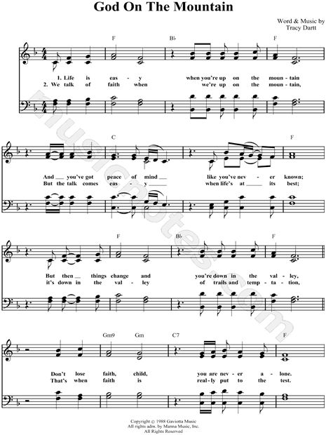

1071 1010 God on the Mountain _T.G. Dartt SE Samonte
GOD ON THE MOUNTAIN
words and music by Tracy G. Dartt
http:www.darttmusic.com |
¡@ |
|
¡@
Life is easy when you're up on the mountain
And you¡¦ve got peace of mind like you¡¦ve never known.
But then things change and you¡¦re down in the valley.
Don¡¦t lose faith for you¡¦re never alone.
For the God on the mountain is still God in the valley.
When things go wrong, He¡¦ll make it right.
And the God of the good times
is still God in the bad times.
The God of the day is still God in the night.
You talk of faith when you¡¦re up on the mountain.
Oh but the talk comes easy when life¡¦s at its best.
But it¡¦s down in the valley of trials and temptation
That¡¦s when faith is really put to the test.
For the God on the mountain is still God in the valley.
When things go wrong, He¡¦ll make it right.
And the God of the good times
is still God in the bad times.
The God of the day is still God in the night.
For the God on the mountain is still God in the valley.
When things go wrong, He¡¦ll make it right.
And the God of the good times
is still God in the bad times.
The God of the day is still God in the night.
The God of the day is still God in the night.
|
¡@ |
|
¡@ 
https://www.pinterest.com/pin/37999190589325389/ |
|
¡@ |
¡@ |
 God on the Mountain SE Samonte
God on the Mountain SE Samonte
¡@
SHARE TWEET
Initially, it is natural for humans to look at problems to be as huge as
mountains. Despite this, we forget the essential being that can help us and it
is God. When we focus on God, the problem looks small, but if we focus on the
problem God seems small. Anyhow, our problem is just as little as a pea and God
is as high as a mountain. There¡¦s no problem that he can¡¦t solve, just as the
song ¡§God On The Mountain¡¨ says.
Let us always put it in a positive way that God is giving us problems or
trials for us to be closer to him.
¡§Our Faith¡¨
In the Bible, there¡¦s a lot of verses that talks about faith and one of them
can be found in the Book of Mathew. It talks about Jesus healing a
demon-possessed child.
Mather 17:20
He replied, ¡§Because you have so little faith. Truly I tell you, if you have
faith as small as a mustard seed, you can say to this mountain, ¡¥Move from here
to there,¡¦ and it will move. Nothing will be impossible for you.¡¨
Further, this is a classic example for pastors, ministers or priest if they
will have their preaching or sermons in church. Jesus is not teaching us to have
faith like a mustard seed; instead, He wants us to know where to place our
trust. Thus, many of us have this attitude sometimes; we don¡¦t know where to set
our faith.
MY LATEST POSTS
9 seconds of 3 minutes, 3 secondsVolume 0% 00:09 03:03
In addition, in the story, the boy¡¦s father let his son go to Jesus, he asked
for his compassion and mercy. Without a doubt, Jesus was moved, and He cast out
the demons. Nothing is impossible once you believe. Even if we have faith as
small as a mustard seed but if our faith is strong and pure, He will be moved.
¡§God On The Mountain¡¨
¡§God On The Mountain¡¨ was written by Tracy Dartt, a gospel singer who was
born in 1944. He started his music career when he was in high school. In
addition, with the help of Mr. Richard Riggs, his music teacher, he was able to
polish his skills in music. Thus, he switched to gospel music in the 60¡¦s when
he joined a teen choral.
Tracy Dartt is a talented person with a hundred songs that he had written, ¡§God
On The Mountain¡¨ was the most remarkable. Further, the song was even
nominated for a Dove Award. It was one of the well-known songs that Dartt had
made. To date, a lot of gospel
artists had made their version of the song but for me, it is not who sung
it, but it¡¦s the message. In closing, we all go through shaking times, but let
us not forget the great being who can stabilize those shaking moments.
Any thoughts? Tell us what you think. Don¡¦t forget to like and share this
post. Share the country spirit, folks! For more country reads, visit
¡@
https://www.countrythangdaily.com/tracy-dartt-god-mountain/